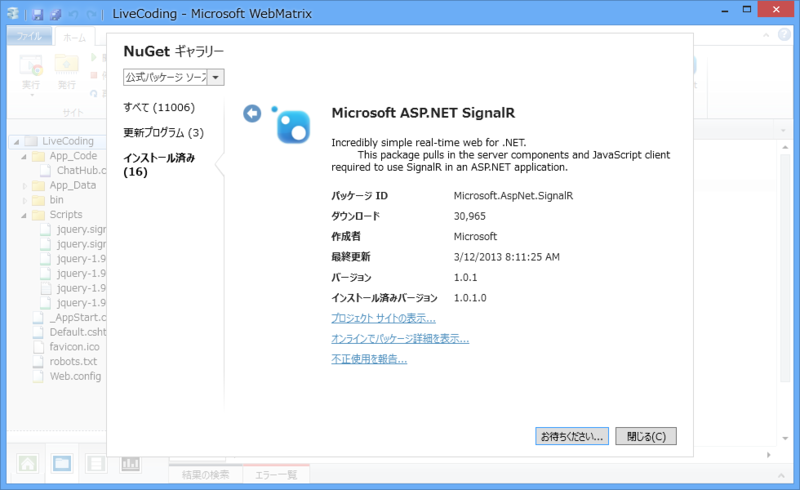
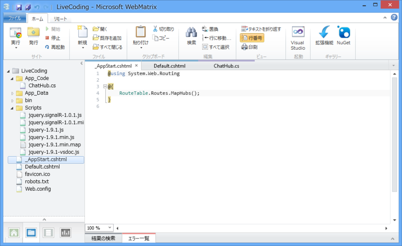
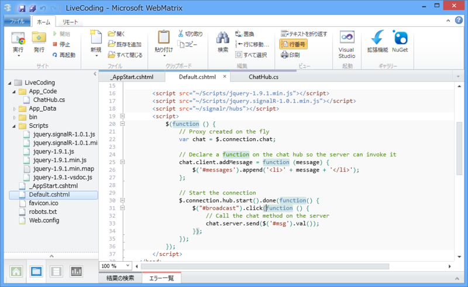
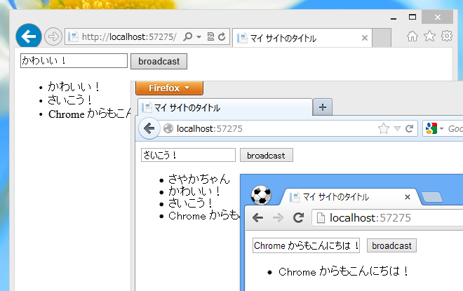

WebMatrix 2: SignalR を動かす （ 1.0.1 対応版）
公開日：
もうだいぶ昔の話になりますが、ASP.NET SignalR が正式リリースされました。
最新版は 1.0.1 ですかね。
ASP.NET SignalR は「WebMatrix 2」からも使えますが、ベータのとき（SignalR Deep Dive ! に参加してきた＋WebMatrix で SignalR 動かしてみた - だるろぐ）とは少し変わっている部分もあるようなので、もう一度やってみました。とりあえず、QuickStart Hubs · SignalR/SignalR Wiki · GitHub を動作させるのが目標。
NuGet で SignalR を取得

公式パッケージソースで「SignalR」を検索すると、三番目ぐらいに出てくるはず。
サーバー（ハブ）

~/App_Code フォルダに ChatHub.cs を作成し、以下のようなクラスを用意します。
using Microsoft.AspNet.SignalR;public class Chat : Hub { public void Send(string message) { // Call the addMessage method on all clients Clients.All.addMessage(message); } }
受け取ったメッセージを接続中のすべてのクライアントへそのまま一斉送信する（クライアントクラスの addMessage() を呼び出す）だけの簡単なクラスです。これがサーバー側のコードになります。
名前空間が変わったのかな？
ハブのマッピング

さきほど記述したハブをルートテーブルにマップして使えるようにします。~/_AppStart.cshtml を作成し、以下のように記述しましょう。
@using System.Web.Routing@{ RouteTable.Routes.MapHubs(); }
QuickStart Hubs · SignalR/SignalR Wiki · GitHub に掲載されているコードと少し違いますが、「WebMatrix 2」の場合はこれで OK です。
正直、あんまりよくわかっていないのですけれど、これをコメントアウトすると次のセクションに出てくる <script src=”/signalr/hubs”></script> が 404 になってしまうので、まぁ、そういうのことをしてくれているのではないでしょうか。クライアントコードで $.connection.chat と書いてハブプロキシを呼び出せるようにごにょごにょするとか、そういう準備全般だと思います。
クライアント（Javascript + HTML）

~/Default.cshtml を以下のように書き換えます。自分の場合は jQuery をアップデートしてあるのですが、古いものでも大丈夫なのかな？ コピペで動かす場合は、スクリプトのバージョンだけ間違わないように気を付けてくださいね。
@{
}
<!DOCTYPE html>
<html lang="ja">
<head>
<meta http-equiv="Content-Type" content="text/html; charset=utf-8"/>
<meta charset="utf-8" />
<title>マイ サイトのタイトル</title>
<link href="~/favicon.ico" rel="shortcut icon" type="image/x-icon" />
<script src="~/Scripts/jquery-1.9.1.min.js"></script>
<script src="~/Scripts/jquery.signalR-1.0.1.min.js"></script>
<script src="~/signalr/hubs"></script>
<script>
$(function () {
// ハブプロキシを作成
var chat = $.connection.chat;
// サーバーが addMessage() を呼んだら……
chat.client.addMessage = function (message) {
$('#messages').append('<li>' + message + '</li>');
};
// 接続開始
$.connection.hub.start().done(function() {
// imput#broadcast がクリックされたら……
$("#broadcast").click(function () {
// サーバーの Send() を実行する
chat.server.send($('#msg').val());
});
});
});
</script>
</head>
<body>
<div>
<input type="text" id="msg" />
<input type="button" id="broadcast" value="broadcast" />
<ul id="messages">
</ul>
</div>
</body>
</html>
input#broadcast を押したら、input#msg の内容を引数にサーバーの ChatHub.Send(string） を実行します。 すると、それがすべてのクライアントに送信され、それを受け取ったクライアントは ul#messages にそれを追加する、というわけ。

とりあえずブラウザーをいくつか起動して適当に入力してみてください。ちゃんとブロードキャストされているかな？